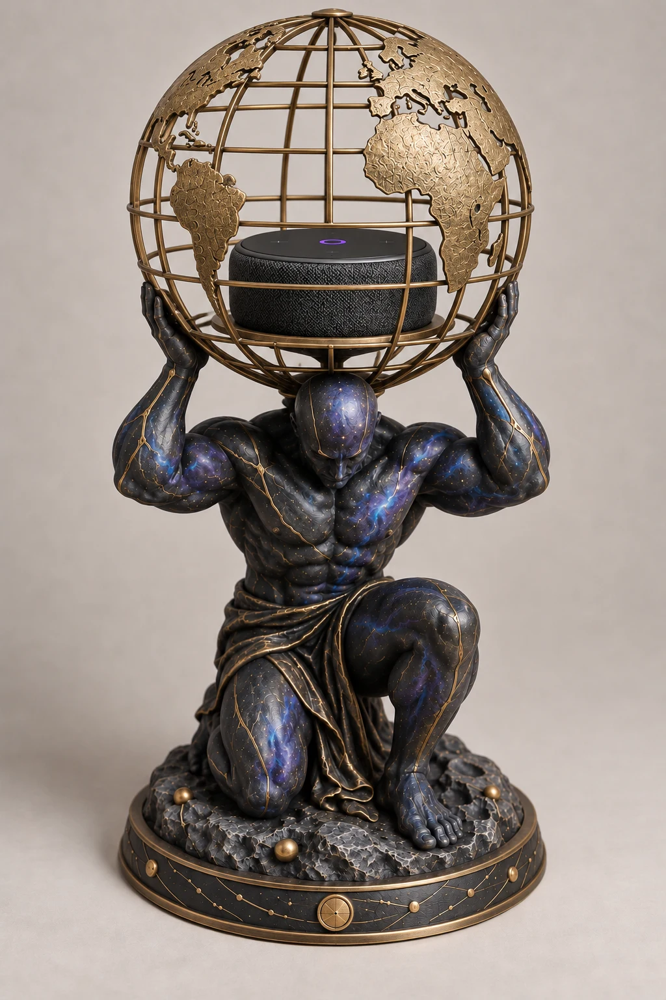

ТРИФОТИ
Творческое объединение
← Промышленный дизайн
Исследование формы · концепт
Атлас с ажурным глобусом
Концепт подставки под колонку

Концепт подставки под колонку · изображение
Открыть оригинал →